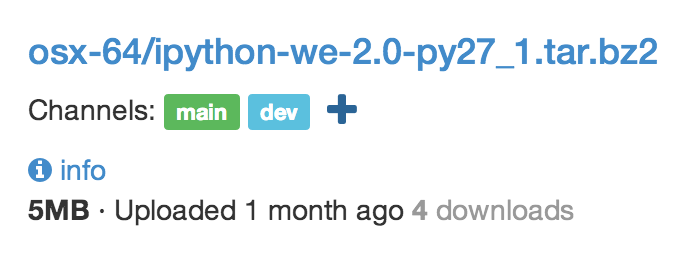
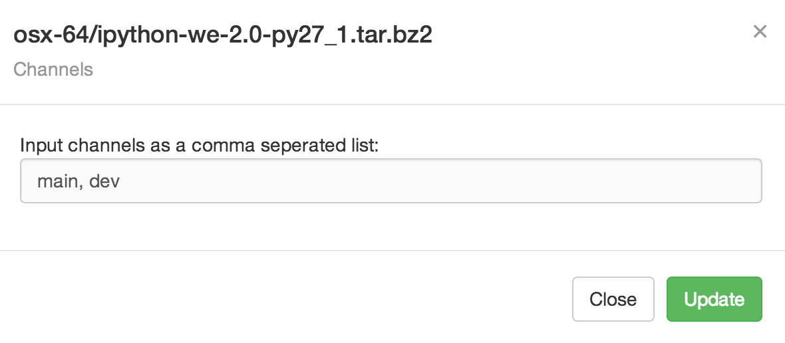

### Uploading To upload a file to a channel, make sure you are using the binstar client greater or equal to 0.5.1. Then you can run the normal `binstar upload` command with one or more `--channel` options. You may name your channels any url safe string. binstar upload ... --channel dev --channel feature/new-ui ### Modifying Channels If you click on the `+` icon beside the list of channels, you may enter a comma separated list of channels you want this file to be found in.
{%endblock%}